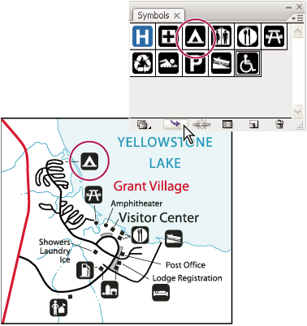

About symbols
A symbol is an art object that you can reuse in a document. For example, if you create a symbol from a flower, you can then add instances of that symbol multiple times to your artwork without actually adding the complex art multiple times. Each symbol instance is linked to the symbol in the Symbols panel or to a symbols library. Using symbols can save you time and greatly reduce file size.
Symbols also provide excellent support for SWF and SVG export. When you export to Flash, you can set the symbol type to MovieClip. Once in Flash, you can choose another type if necessary. You can also specify 9‑slice scaling in Illustrator so that the movie clips scale appropriately when used for user interface components.
After you place a symbol, you can edit the symbol’s instances on the artboard and, if you want, redefine the original symbol with the edits. The symbolism tools let you add and manipulate multiple symbol instances at once.
